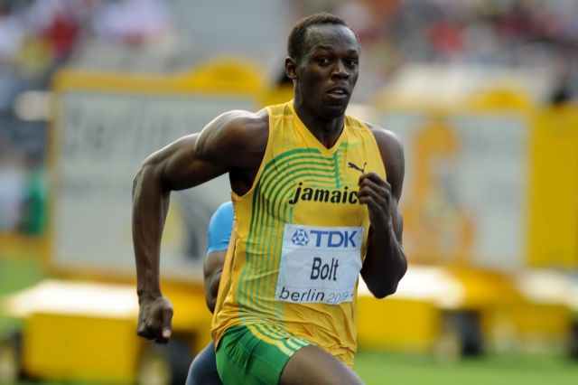
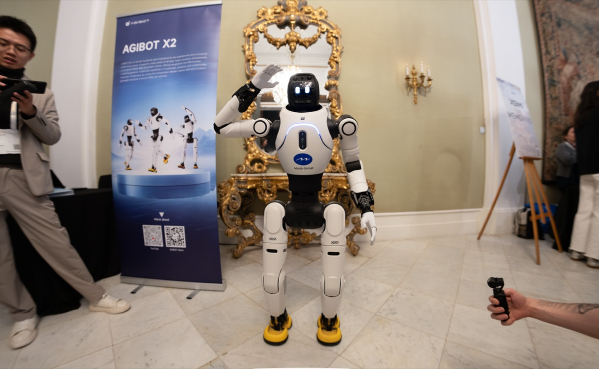

Executive Summary
The 100-metre gold at the second World Humanoid Robot Games in Beijing was won in 8.64 seconds. The same robot won the same event at last year's inaugural games in 21.5 seconds. The winning time shrank by a factor of nearly two and a half in twelve months. The games ran from 22 to 26 August, with 666 teams bringing 2,056 robots to 51 events.
In the same arena, robots struggled to hammer nails into a corkboard, and Nature reports they did so "even when operated by team members wearing gloves that control the robots' movements." Not every attempt failed. The CCTV+ video embedded in that article shows robots hammering nails "with varying degrees of success." Karen Liu, a computer scientist at Stanford, asks which is harder, folding laundry or doing a backflip, and notes that most people answer laundry. "But for humanoids, doing a task that we do in our daily lives is actually way harder than a backflip." Running follows a prescribed path. Hammering means holding a tool and pushing force through it.
The organizers had already handled that contrast in the rules. In scenario events, they awarded full points to robots that finished the task on their own and half to those a human drove by remote. To measure capability, the games first had to record who produced the motion.
Key Numbers
Sources: Nature News (27 Aug 2026), organizers' competition rules and on-site reporting
8.64s
100-metre gold medal time
The same robot ran 21.5s a year earlier
Half
Points a teleoperated robot receives
Autonomous work scores full points in scenario events
3 of 12
Teams that finished the firefighting scenario
Hazard identification through extinguishing, in 30 minutes
2,056
Robots entered in the games
666 teams competing across 51 events
A Year Turned 21.5 Seconds into 8.64
Tiangong Ultra, built by X-Humanoid in Beijing, took the 100-metre gold in 8.64 seconds, Nature reported, almost a full second inside Usain Bolt's 9.58-second world record from 2009. When the same robot won the same event at last year's inaugural games, the time was 21.5 seconds. Human sprinters needed a century to take roughly one second off the 100 metres. This event's robot record fell by more than twelve seconds in twelve months.

On speed alone that looks like a finished achievement. The track told a different story. Organizers laid thick stopping mats several metres past the finish line because some sprinting robots could not decelerate safely. ZME Science reports that Tiangong Ultra, in a round before the final, clocked 8.86 seconds and then hurtled into one of those mats, collapsed, and briefly caught fire around its torso. In another semifinal a competing robot came apart while running. Earlier races ended with robots tumbling, colliding or being carried away, one of them broken apart at the waist. The gold-medal 8.64 seconds came the following day, in the large-group final that closed the games.
Dipam Patel, a Purdue doctoral candidate and researcher at the US Army DEVCOM Army Research Laboratory, described that structure to Ars Technica exactly as it stands. Crossing the finish line is the goal, he said, and "it doesn't matter if you stop and it doesn't matter if you fall into different pieces." He also noted that companies fielded different machines for different events: "Some companies had different types of robots for different games or different tasks, because they were engineered for that task to be the best in that." The sprint machines were tuned for one problem, getting down a straight track as fast as possible, and stopping sat outside it.
The narrower a problem is defined, the faster optimization moves. A track is flat, empty of obstacles, and bounded at both ends. A warehouse or a kitchen, where objects are rarely where they are supposed to be, offers none of those conditions. The fact that the record collapsed and the question of what the record proves have to be read separately.
The Rules Priced Teleoperation at Half
This year's games did not stop at sprints and jumps. They expanded into real-world challenges such as shelving books and making beds. In these scenario-based events, Nature writes, "robots that completed tasks on their own were scored more highly than those that were remotely operated by humans." The organizers' rules put that sentence into a coefficient called the Autonomy Weight Coefficient. Full autonomy means the robot completes an event without a human operator being in the loop. In scenario events where full autonomy is not required, officials award full points to robots operating autonomously, while robots relying on teleoperation receive only half the available points.
Some events left no option other than autonomy. As of 2026, sprints, the 4×100m relay, soccer, tai chi and gymnastics mandate full autonomy. The 400m obstacle course and kickboxing, by contrast, permit a human in the loop. Of the 51 events, 30 were sporting contests and 21 tested practical scenarios in factories, restaurants, offices and emergencies, and more than 40 percent of the programme required fully autonomous operation.
Look only at the output of a scenario event and autonomy is indistinguishable from teleoperation. The bed is made and the books are back on the shelf. Because the same outcome means something different depending on who produced it, the organizers created a column for provenance next to the result. That is also why Forbes called the games "one of the most honest documents in robotics right now." What is done autonomously and what still needs a human hand shows up directly on the scorecard.
The final medal count made that visible again. X-Humanoid, which lowered the 100-metre record three times in five days, did not finish first overall. In the organizers' closing tally reported by Tech Times, the team atop both the gold table and the overall standings was AGIBOT of Shanghai, whose 46 medals including 18 golds came from dexterous manipulation, scenario-based tasks and obstacle racing. By the company's own account, its OmniHand system reached the finals in all eight dexterous-hand events and won seven of them. The events that drew the crowd and the events that stacked up medals were not the same events.

Seen from the data side, this rule is familiar. Store only the resulting trajectory of a demonstration and there is no way to tell whether an autonomous policy or a human operator produced it. The games forced that distinction through the points table. A data pipeline has to carry the same distinction as metadata. Leave it out and the grounds for interpreting model performance disappear once training is done.
Trajectories Copy, Contact Accumulates
Karen Liu puts the gap in terms of energy. Humanoids thrive in track-and-field events, she says, "because they translate energy into acceleration extremely efficiently," and backflips and sprints are actions that follow a prescribed trajectory. "Every single millisecond, it knows what to do and how much torque to generate. It doesn't need to 'think'." A prescribed trajectory is a solved control problem long before the robot reaches the starting line.
Trajectories of that kind are exactly what a simulator can manufacture cheaply and in bulk. One X-Humanoid runner completed the 400 metres with its arms held near its face, and its developers said reinforcement learning in simulation had discovered that the unusual posture, coupled with hip rotation, worked better than imitating a human runner's arm swing. A search could reach past human intuition because the search ran inside a physics engine. Falling breaks no parts there, and tens of thousands of attempts a day cost almost nothing.
Fingertips are a different matter. Liu says creating robotic grippers "that can mimic the strength and coordination of the human hand is challenging," and that using tools is particularly hard "because grippers struggle to create enough contact with a tool to apply strong force." That limit sits upstream of the control software, which is why hammering went badly even with team members wearing gloves that drove the robots' movements. Teleoperation supplies the human judgment about what to do next. It cannot supply the physics of a hand delivering force into a tool.
This does not mean every fingertip event was closed off. AGIBOT's OmniHand took gold in bean picking with tweezers, powder weighing and block building. Placing an object precisely and driving large force through a tool are separate problems, which is why Liu singles out tool use rather than manipulation in general. Hammering a nail means gripping firmly enough not to lose the hammer while concentrating force on the narrow face of a nail head.
Contact resists simulation because physics engines treat friction, deformation and slip as approximations. In trajectory tasks those approximations rarely swing the outcome, but at the moment a hammer strikes a nail head, where the contact patch is small and the force is large, the distance between approximation and reality shows up as failure. Contact data therefore accumulates only as fast as robots actually try and fail in the field. The way tactile data at the fingertips has sat outside the flow of humanoid capital compounds the same problem. If human operators cannot get over that wall, the route past it does not run through more teleoperation.
The Next Record Will Not Look Impressive
In the firefighting challenge, robots had 30 minutes to identify hazardous materials, find and close three valves, locate a fire, then find an extinguisher and put it out. According to the Global Times, only three of 12 teams completed the entire sequence. In another scenario event a package delivery arrived unannounced and forced the robot to change what it was doing. Each of those motions had already been demonstrated in some other event. Chain them in order and change the situation midway, and the completion rate drops to a quarter.
People building these machines put it more bluntly. Yu Chao, chief executive of Lumos Robotics, told Reuters: "Only when it can work in those end scenarios does it have real value." He added, "Simply running and jumping does not improve efficiency." Aya Durbin, who directs development of the Atlas humanoid at Boston Dynamics, which sent no robots to the games, says much the same. "Humanoids won't become a part of our everyday lives if they're always 'toys'. They need to be used to solve actual problems and make the world a better place."
So the next record to fall is unlikely to be the one that takes 8.64 seconds down to 8.4. Finishing an ordinary shift with no parts falling off, no fire, and no human stepping in is the harder mark. No grandstand cheers for that one. Counting it, though, takes a scorecard. That is why the games needed a coefficient for autonomy in the first place.
For practitioners working with robot data, the thing to take from Beijing is the design of the scorecard rather than the event results. Record alongside each stored demonstration whether the motion came from an autonomous policy or a human teleoperator, and whether it was drawn from a simulator or captured in the field, and the reasons a model succeeds and the reasons it fails can later be explained from the same material. Leave that column empty and 8.64 seconds and a failed nail sit side by side on one results sheet with nothing to tell them apart.
References
Reporting
- 1.Glickman, K. (2026). "'Robot Olympics' reveal humanoids' rapid progress — and flaws." Nature, 27 Aug 2026.
- 2.Puiu, T. (2026). "Chinese Humanoid Robots Just Ran Faster Than Usain Bolt's 100 Meter Record. Then They Crashed into a Wall." ZME Science, 27 Aug 2026.
- 3.Global Times staff (2026). "Tiangong Ultra resets 100m mark at 8.64s as humanoid robot games close in Beijing." Global Times, 26 Aug 2026.
- 4.Fisher, B. (2026). "Tiangong Ultra Ends Robot Games at 8.64s While AGIBOT Tops Overall Medal Table." Tech Times, 27 Aug 2026.
Reference material
- 5.Wikipedia contributors (2026). "World Humanoid Robot Games." Wikipedia.